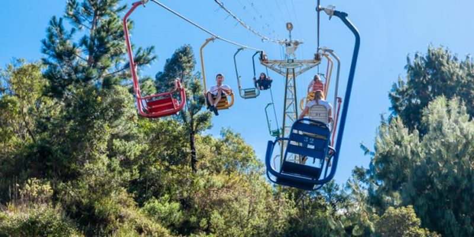
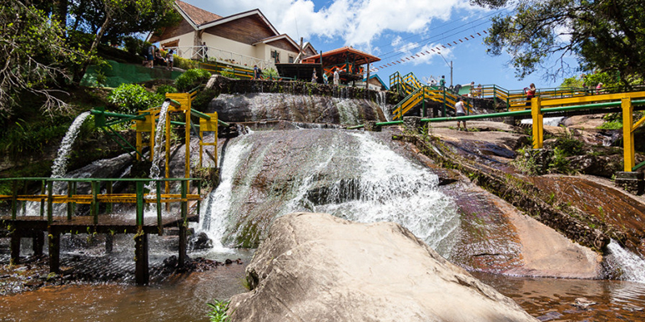
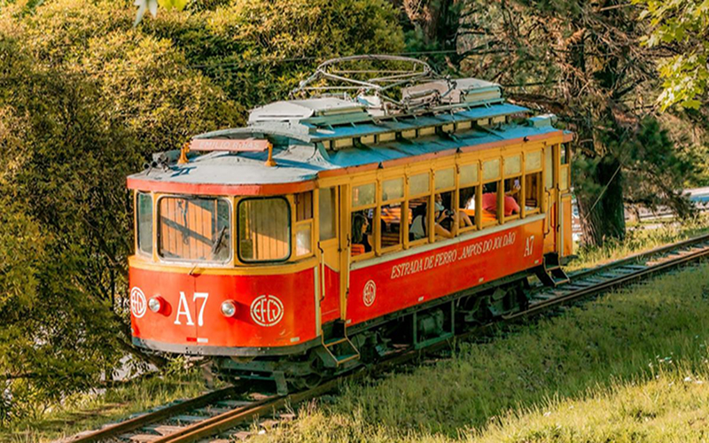

15 Pontos Turísticos gratuitos em Campos do Jordão, para você aproveitar bastante a cidade sem gastar muito!! Porque sabemos que toda viagem tem gastos, e às vezes isso nos obriga a escolher entre uma atração e outra. Pois aproveite esta lista que cabe em todos os bolsos para visitar a “Suíça Brasileira”, como é conhecida a cidade paulista, e desfrutar de seu clima alpino de temperaturas amenas e arquitetura baseada em construções europeias.
1.Morro do Elefante
O Morro do Elefante é um mirante de 1.800 metros de altitude situado em Campos do Jordão. Tornou-se passagem obrigatória entre os turistas por proporcionar vista panorâmica para as montanhas da Serra da Mantiqueira e boa parte da cidade. Há um teleférico que leva os visitantes do Capivari até lá. Outra opção é seguir pela estrada e passar por belas paisagens, formadas por grandes casas e condomínios. Esse é um dos mais famosos pontos turísticos de Campos do Jordão. Todos que visitam a cidade, querem conhecer e andar no teleférico. É impressionante.
2.Ducha de Prata
A ducha de prata é um dos mais refrescantes pontos turísticos de Campos do Jordão, formada por várias duchas artificiais. Os visitantes podem apreciar a canalização que desemboca águas vindas do represamento do Ribeirão das Perdizes e utiliza plataformas de madeiras para tomar banhos frios. Está localizado no bairro de Vila Inglesa, na estrada para a Vila Capivari.
3.Passeio de Bondinho e Trem
O bondinho já um passeio turístico tradicional em Campos do Jordão. O visitante tem a oportunidade de passear em uma máquina de 1910, inalterada para conhecer a Serra da Mantiqueira. O ponto de partida fica na Estação no bairro do Capivari e vai até a Parada São Cristovão próximo ao portal. Passando pelas principais vilas da cidade: Capivari, Jaguaribe e Abernéssia, em um percurso de 4 quilômetros. Um trem também realiza o passeio para a cidade vizinha de Santo Antônio do Pinhal.